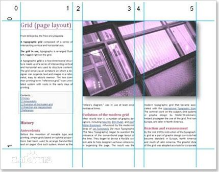

我们常常用“独具匠心”一词来形容一件产品或作品的创造性、独特性。我们的制造者，技术研发者就是当代之“匠”，匠者就应该具备匠心精神。那么什么是匠心精神。 有这样一则故事： 德国殖民时期在青岛江苏路修建的基督教堂的钟表迄今运转正常。2010年，在华投资生产大型齿轮的一名德国商人陪父亲在青岛游览时看见了这座钟表，老人顿时认出了钟表所用的齿轮便是由他的家族企业供应的。在接受记者采访时，该德国商人表示：“根据目前的使用情况，这些齿轮没有任何问题，还能再用上300年，真要维修时，恐怕要到我的曾孙一代了。” 每当读到这个故事的时候，我都在思考，到底什么才是“匠心精神”？到底如何才能成为真正的匠者，做到真正的创造创新？ 匠心首先是虚心。虚以待物，宽以待人。只有保持谦虚的心，才能有足够的心理空间去发现世界、理解世界。在读大学的时候，就已经学**过PID算法了，后来研究生用PID算法做论文，后来工作了还在使用PID算法。但是每次设计控制系统，每次调整参数，每次研讨方法的时候，都会有不同的体会和理解。试问，如此简单的方法，我们真的研究透彻了吗？做技术工作，眼要放的高，心必须要放的低，唯有此才能更深的理解与感悟。
CSS3 圆角表格：
匠心是恒心。不管是学**某种技术，亦或研发某种产品，再或者开发某个项目，大多开头的时候我们会信心十足，动力充沛。随着时间的推移，不断出现的课题，各种失败的打击会不断的蚕食我们的精力。我们还能像开始一样的坚持吗？恒心是什么，恒心是一种持之以恒的耐受力，恒心比**更重要，如果**是一场百米冲刺，恒心就是一场旷日持久的马拉松，而且很有可能是尚不知目的的马拉松，我们能做的只有奔跑。恒心更能考验匠者的毅力。
匠心是细心。细微之处彰显非凡品质。对于技术和产品精益求精的态度必不可少。我还记得上两个月中国游客到日本抢购马桶盖的新闻，从功能上讲，国产的产品并不差，但是常常细微之处方显功底，我们缺少的就是这细微之处的东西。也许有人会说，这只是部分国人崇洋媚外造成的闹剧。那好吧，我们用汽车去做对比，为什么合资车性价比较国产车低，但其仍然是很多购车一族的首选，你去问他们，他们大多回答是国产车小毛病多。小毛病多并不是什么大问题，却影响了产品的品味，进一步的影响了产品的品牌。
匠心是不断追求的执著心。不断追求，不断创新是当今社会永恒的话题。我不反对创新，但是我反对没有根基的创新。真正的匠者，一定要在某个领域做到虚心、恒心、细心，才能进一步的谈创新，才能完成真正意义上的创新，这种创新是浴火后的新生，是锤炼后的淬火，更是一种水到渠成的洒脱心态。  从字面意思来看，匠人精神的重点“人”，而匠心精神更加突出“心”。匠人精神指的是像匠人一样对工作执着专注、对所做的事情和作品坚持精雕细琢、做到极致，他的精神的精髓是一丝不苟、耐心、精益求精。而匠心精神，则更多地强调，专注，耐心做一件事这种心态。不仅可以用在工作上还可以是生活的很多方面，它的精神的精髓还加入了创新这样的内容。一分一秒的平淡时光里，匠人精神正在觉醒